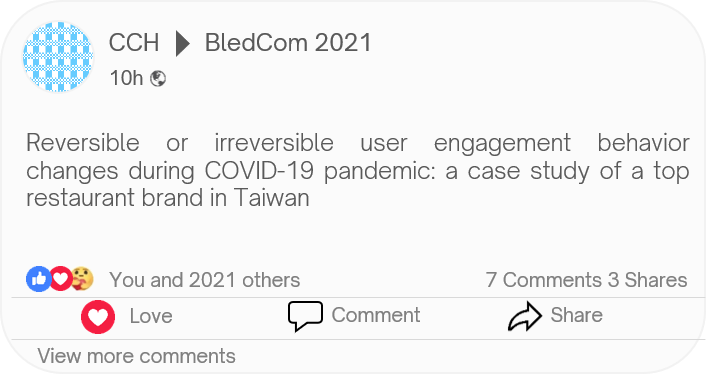
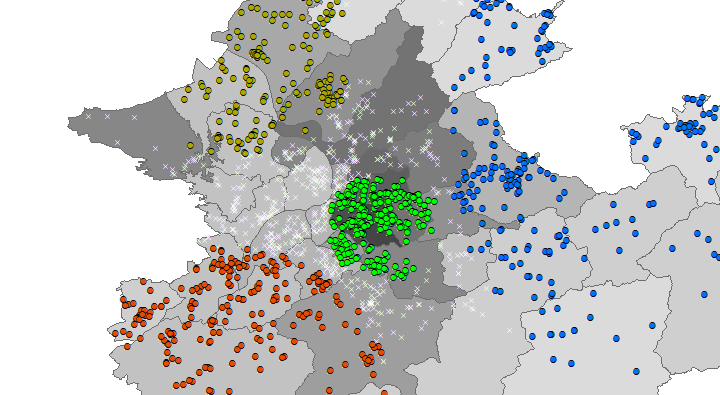
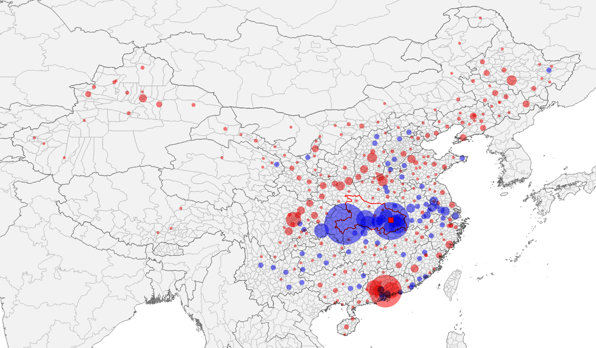
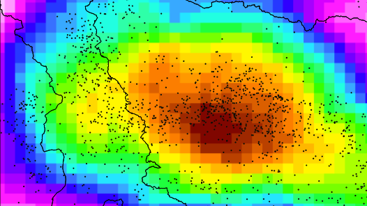
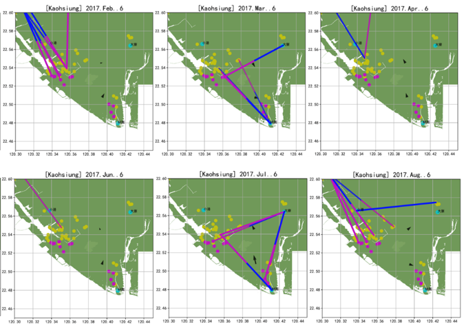
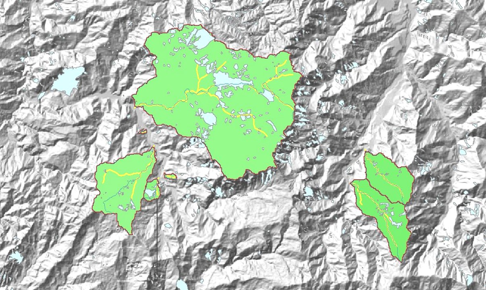

Working Experience
“Learning by Doing” - John Deway
Across academic, governmental, and industrial fields ...

-
Assistant Professor @ Department of Geography, National Taiwan Normal University
Aug. 2023 - Present- Leveraged graph neural network and graph machine learning to train urban and rural human mobility prediction model for future urban planning and human flow prediction.
- Teaching history: Urban GIS and Medical Geography.
-
Assistant Professor @ Master Program in Intelligent Computing and Big Data, Chung Yuan Christian University
Assistant Professor @ Undergraduate Program in Intelligent Computing and Big Data, Chung Yuan Christian University
Aug. 2022 - Jul. 2023- Leveraged GeoAI to characterize urban and international human mobility for building a simulated mobility network.
- Teaching history: Probability & Statistics (1), Big Data Fundamentals and Application, Capstone Project (II), Introduction to Natural Science and Artificial Intelligence, and Intro. to EECS Profession.
-
AI Consultant @ Taiwan CyberSecurity Foundry Company
Apr. 2022 - Apr. 2023- Conducted machine learning techniques to classify cybersecurity alerts, and its accuracy reached 99.7%.
- Combined federated learning framework to construct serverless edge detectors for network traffic data.
-

Postdoctoral Researcher @ Dept. of Radiology, School of Medicine, Taipei Medical University
Postdoctoral Researcher @ Dept. of Radiology, Taipei Municipal Wanfang Hospital, Taipei Medical University
Aug. 2021 - Jul. 2022- Evaluated the 3D trabecular microstructure parameters to reveal the relationship between areal BMD dual-energy X-ray Absorptiometry and volumetric BMD from QCT.
- Investigated the vertebral fracture assessment problems with a 2D plain-film radiograph and different 3D CT grading methods (conventional, consensus, and global search).
- Developed a 100% accuracy and rapid automated bone mineral density (BMD) report generator to improve efficiency for report production.
-

Data Scientist | A Joint Business Planning on Social Media Marketing @ School of Journalism and Communication, The Chinese University of Hong Kong
Aug. 2019 - Present- Collected fine-dining brand’s Facebook engagement data to demystify the pandemic impact on social media behavior from 2019 to 2021.
- Applied ML techniques and time-series analysis in social media data to predict the reservation trend.
-

Data Scientist @ Institute of Sociology, Academia Sinica
Mar. 2019 - Jul. 2023- Utilized complex network analysis techniques to investigate the social network formulation through quantitative and qualitative approaches.
- Conducted spatiotemporal statistical analyses (SaTScan & LISA) to reveal the preferred locations of multi-religious landscapes with 400-year cultivation data in Taipei city.
- Applied Louvain community detection and ML techniques (PCA and hierarchical clustering) to demystify the association between pilgrimage network and religious development history.
-

Research Assistant & Teaching Assistant @ Geospatial Computational Science Laboratory, Dept. of Geography, NTU
Aug. 2019 - Jul. 2021- Timely estimated the global exposure risk mobile app for direct and transfer air passengers to meet WHO healthcare goals and traveler needs in the COVID-19 pandemic.
- Demystified the role of transfer activities in cross-province transmission after Wuhan city lockdown by web crawling 1+ million railway schedule data during the COVID-19 pandemic.
- Utilized survival analysis and community detection for H1N1 global disease transmission with 85+ million global flight schedules.
-

Research Assistant & Teaching Assistant @ Remote Sensing and Spatial Knowledge Laboratory, Dept. of Geography, NTU
Mar. 2013 - Jul. 2021- Designed an automated low-frequency electromagnetic signal processing and pattern recognition system.
- Applied ML techniques in seismic precursor analysis and automated vertical stratum structure recognition.
-

Data Scientist Engineer @ CyberSecurity Technology Institute, Institute for Information Industry (III)
Aug. 2019 - Feb. 2019- Processed air pollution data to identify the spatiotemporal causal relationship between stationary emission sources and ambient air quality
- Developed a real-time and open-source cybersecurity monitoring system with Elasticsearch, Logstash, and Kibana (ELK), which analyzed the suspicious packets.
- Implemented a generative adversarial network (GAN) model to detect malicious behaviors with a 250 GB malware dataset.
-

Research Assistant & Teaching Assistant @ Debris-flow Disaster Prevention Laboratory, Dept. of Social and Regional Development, NTUE
May 2013 - Jan. 2016- Leveraged social media advertising to promote crowd-sourcing debris-flow disaster platform and mobile app.
- Adopted several spatiotemporal hydrological analyses to timely characterize debris-flow disasters to informed experts and public users on a website and mobile app.
-

Internship @ Slopeland Division | National Science and Technology Center for Disaster Reduction (NCDR)
Jul. 2011 - Aug. 2011- Conducted spatial statistical methods to reveal the hidden debris flow and landslide areas from massive high-resolution remote-sensing images.